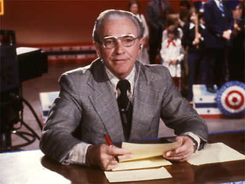
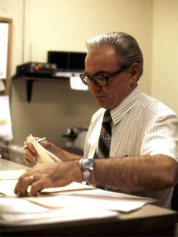

|
|
The Don Stellges Report  KPTV newsman Don Stellges hosted a weekly wrapup of local news events. 
This page last updated on August 24, 2025 |


|
Yesterday's KPTV Website design and content ©2003-2025 by Ron Dunevant, LLC unless otherwise noted. |